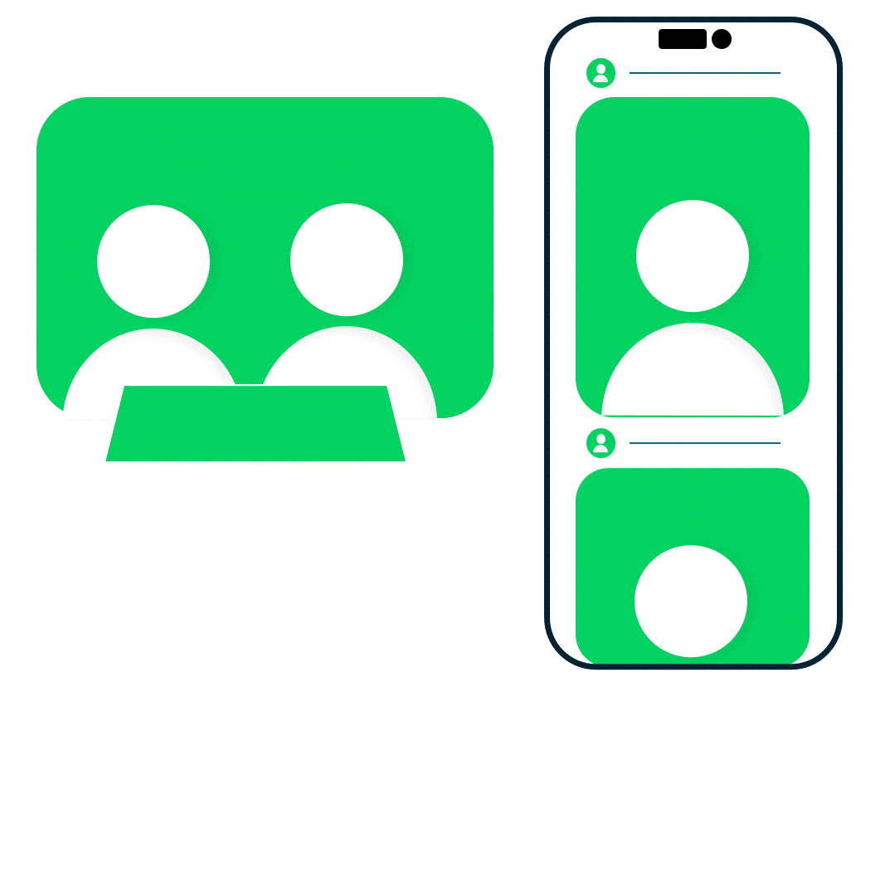
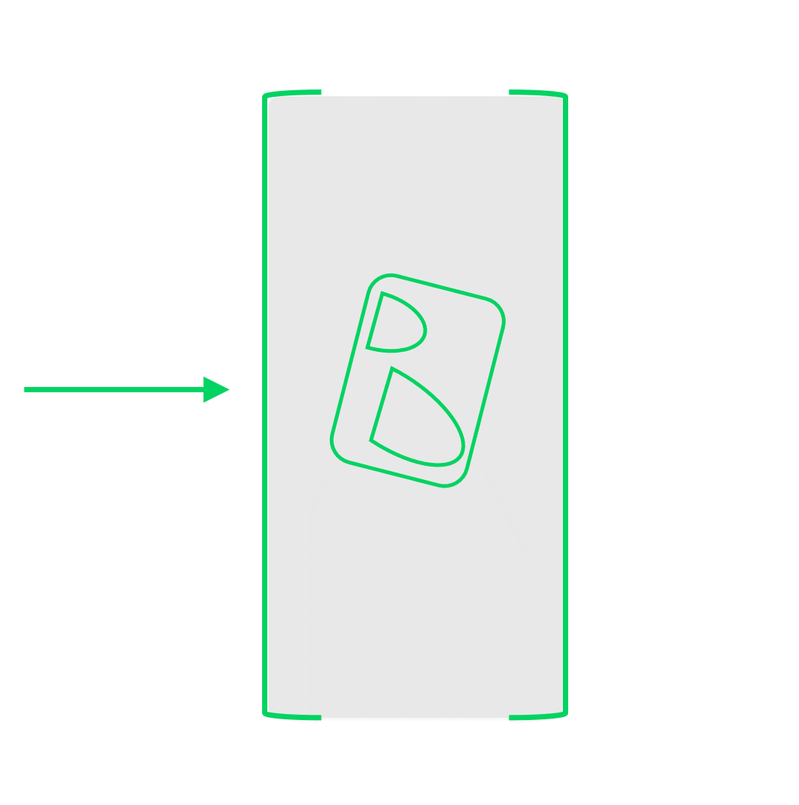

Ruil hier Bungels in voor een gezelligheidsvoucher voor een vriend die er toe doet
Wat als je meer tijd en hersencapaciteit zou kunnen investeren in jouw vrienden door af en toe jouw sociale media netwerk op te schonen van Bungels?
Bungels zijn verwaterde sociale contacten die je over de tijd heen hebt verzameld op sociale media en nu enkel en alleen van op de hoogte van blijft door het bekijken van hun posts

Met het bekijken van posts van deze stapel aan Bungels investeer je tijd en hersencapaciteit hen. Volgens de wetenschap hebben we een limiet van deze twee factoren en daarom ook een limiet aan sociale contacten die we kunnen onderhouden. Met het ontvolgen van Bungels maak je dus tijd en hersencapaciteit vrij voor vrienden die er toe doen. De BUNGEL.O.MAT nodigt je uit om eens kritisch naar je online sociale media netwerk te kijken.

Maak een keuze en plaats je mobiel in de houder hiernaast om te beginnen